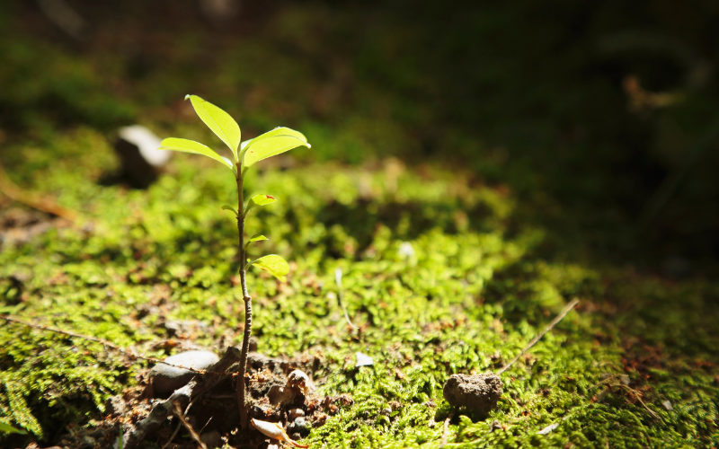

01Green Campus Initiative
Top-down · Symbolic commitmentA three-pronged model — the Talloires Declaration, Green Protocol compliance and the Sulitest literacy assessment — that helps institutions rethink their environmental culture and cut their ecological footprint.